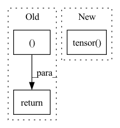

Pattern ID :925
Before Change
mems = rearrange(next_mems, "(b n) d -> b n d", b = b)
mems = self.mem_ff(mems)
return out, mems
After Change
if exists(self.decoder) and exists(tgt):
dec_out = self.decoder(tgt, context = enc, src_mask = tgt_mask, tgt_mask = src_mask, return_loss = True)
else:
dec_out = torch.tensor( 0., requires_grad = True, device = device)
// update memory with attention
mem_mask = torch.eye(num_mem, num_mem, device = device).bool()
mem_mask = repeat(mem_mask, "i j -> b i j", b = b)In pattern: SUPERPATTERN
Frequency: 3
Non-data size: 3
Instances Fragment ID: 3320527
Project Name: lucidrains/memformer
Commit Name: e4d719aec2353d2640d98c895257e42c3fea5bf4
Time: 2020-11-02
Author: lucidrains@gmail.com
File Name: memformer/memformer.py
M Class Name: Memformer
N Class Name: Memformer
M Method Name: forward(6)
N Method Name: forward(6)
M Parent Class: nn.Module
N Parent Class: nn.Module
M File Name: memformer/memformer.py
N File Name: memformer/memformer.py
M Start Line: 249
M End Line: 279
N Start Line: 260
N End Line: 292
Before Change
mel_loss + duration_loss + pitch_loss + energy_loss
)
return (
total_loss,
mel_loss,
pitch_loss,
energy_loss,
duration_loss ,
)
After Change
duration_loss = self.mse_loss(log_duration_predictions, log_duration_targets)
alpha = 1
D_s_loss = D_t_loss = torch.tensor( [0.], device=mel_predictions.device, requires_grad=False)
if D_s is not None and D_t is not None:
D_s_loss = self.mse_loss(D_s, torch.ones_like(D_s, requires_grad=False))
D_t_loss = self.mse_loss(D_t, torch.ones_like(D_t, requires_grad=False))
Fragment ID: 3320524
Project Name: keonlee9420/stylespeech
Commit Name: b18d6280abb4063fdeab58238ec574166dd405f0
Time: 2021-06-13
Author: keonlee9420@gmail.com
File Name: model/loss.py
M Class Name: StyleSpeechLoss
N Class Name: MetaStyleSpeechLossMain
M Method Name: forward(3)
N Method Name: forward(3)
M Parent Class: nn.Module
N Parent Class: nn.Module
M File Name: model/loss.py
N File Name: model/loss.py
M Start Line: 75
M End Line: 91
N Start Line: 78
N End Line: 104
Before Change
// reg_heads shape:[[B, 80, 80, 4],[B, 40, 40, 4],[B, 20, 20, 4],[B, 10, 10, 4],[B, 5, 5, 4]]
// center_heads shape:[[B, 80, 80, 1],[B, 40, 40, 1],[B, 20, 20, 1],[B, 10, 10, 1],[B, 5, 5, 1]]
return cls_heads, reg_heads, center_heads
def _fcos(arch, pretrained, progress, **kwargs):
model = FCOS(arch, **kwargs)After Change
del features
self.fpn_feature_sizes = torch.tensor(
self.fpn_feature_sizes) .to(device)
batch_positions = self.positions(self.batch_size,
self.fpn_feature_sizes) Fragment ID: 3320525
Project Name: zgcr/pytorch-imagenet-cifar-coco-voc-training
Commit Name: d271077f312fa0d2bf7456c3b5edc63e49aa3a39
Time: 2020-07-19
Author: zgcr@mail.ustc.edu.cn
File Name: public/detection/models/fcos.py
M Class Name: FCOS
N Class Name: FCOS
M Method Name: forward(2)
N Method Name: forward(2)
M Parent Class: nn.Module
N Parent Class: nn.Module
M File Name: public/detection/models/fcos.py
N File Name: public/detection/models/fcos.py
M Start Line: 109
M End Line: 109
N Start Line: 82
N End Line: 125